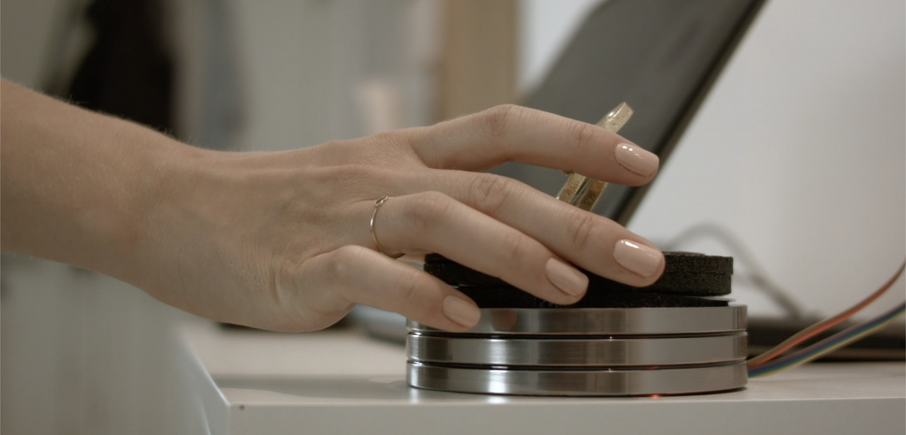
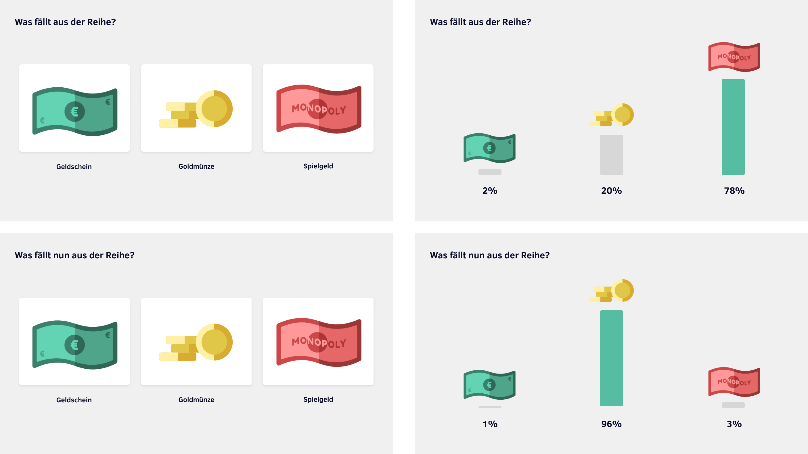
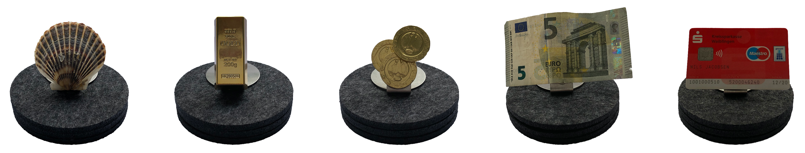
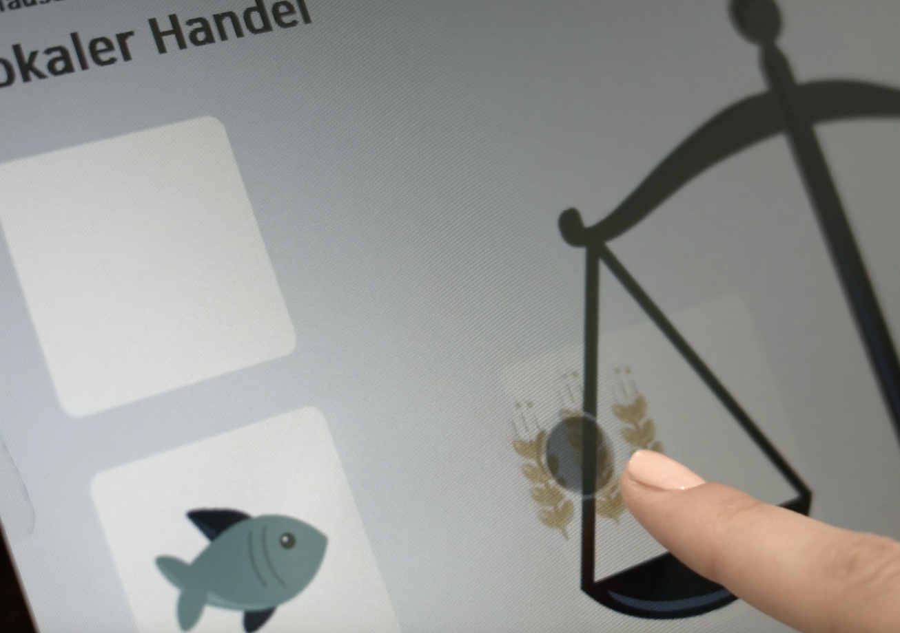
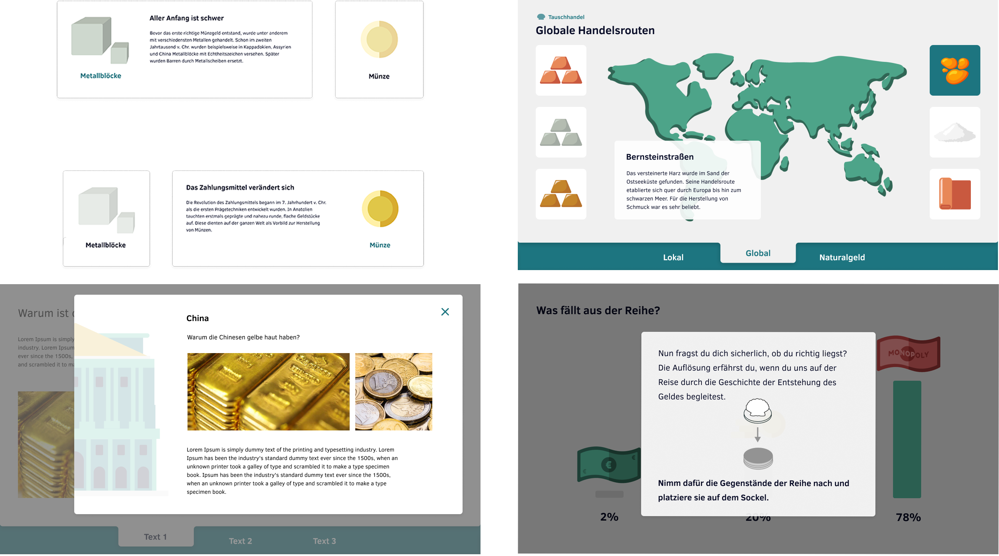

Exhibition Design März 2020-Juli 2020 Yvonne Becker, Niklas Buchfink, Nils Jacobsen,
Sophie Vollmer
Ein interaktives KommunikationssystemWarum Geld eine Sache des Vertrauens und keine Sache des Wertes ist, wie sich dieses System im Laufe
der Jahrtausende entwickelt und durchgesetzt hat und warum es so wichtig ist, mit gesundem Verstand
darauf zu vertrauen. Diese Themen klären wir in unserer Museumsanwendung "Eine Geschichte des
Vertrauens".

Cliffhanger Zu Beginn werden Nutzende mit der Live-Umfrage "Was fällt aus der Reihe?" konfrontiert.
Am Ende werden Nutzende erneut aufgefordert diese zu beantworten. So kann zum Schluss das Lernziel der Experience erneut verdeutlicht werden.


Analoge Interaktion Nutzende werden aufgefordert eines der fünf Exponate auf den Sockel zu platzieren. Daraufhin wird das jeweils zugehörige Kapitel aufgerufen. Die Replikate repräsentieren stellvertretend die verschiedenen Kapiteltitel. Eine Muschel für "Tauschhandel", ein Goldbarren für "Gold", Goldmünzen für "Münzgeld", ein 5 €-Schein für "Papiegeld" und eine EC-Karte für "Vertrauensgeld". Die Replikate sind mit RFID-Karten ausgestattet, wodurch die Kapitel beim aufsetzen der Replikate auf den Sockel aktiviert werden.
Try Yourself
Das Einbinden mehrerer Prinzipien der Gamification dient dazu, Nutzende möglichst lange an der Anwendung zu halten und den Lernerfolg zu maximieren. Beispielsweise werden Nutzende im Kapitel "Tauschhandel" aufgefordert, das Tauschen selbst auszuprobieren. Hierbei werden negative Rückmeldungen vermieden, stattdessen werden Vor- und Nachteile des Tauschs aufgezeigt.

Animierte Inhalte
Vereinzelt unterstreichen animierte Illustrationen das Verständnis der Inhalte. Mit Hilfe eines Parallax-Effekts werden animierte Personen in Szene gesetzt.
Komplexe Inhalte
Komplizierte Themengebiete werden in kleineren Einheiten dargestellt, um leicht zugänglich vermittelt werden zu können. Der Einsatz verschiedener Darstellungsvarianten der Inhalte wie Kacheln, Pop-Ups und Textfeldern, bietet Abwechslung und sorgt für eine spannende Darstellung der Inhalte.
